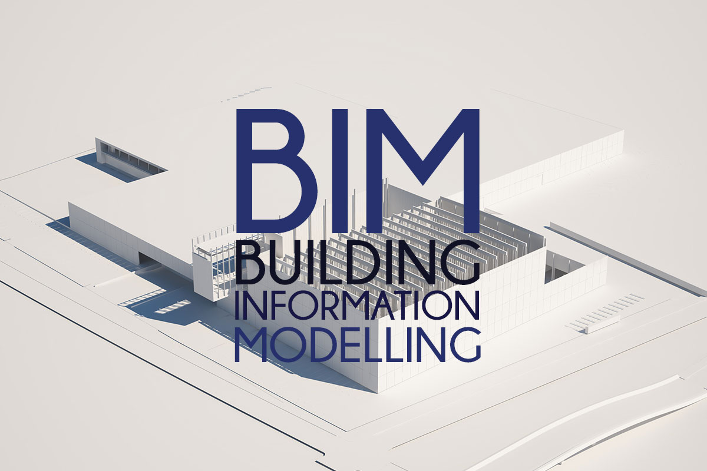
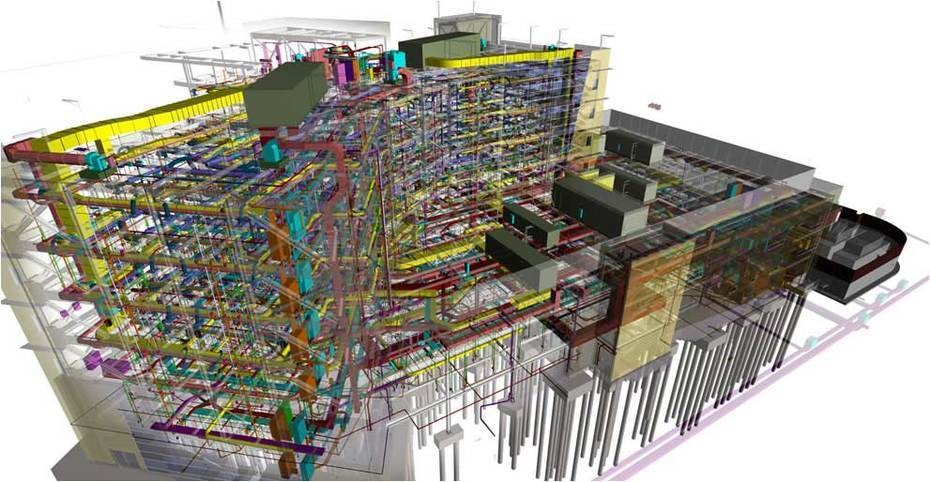

Muchas personas piensa que BIM es un software, algo así como Revit, Archicad, AutoCAD, etc, para empezar debemos dejarlo claro, BIM no es un software, es un MÉTODO DE TRABAJO, que se define en el contexto de la cultura colaborativa y de la práctica integrada, supone un cambio, una transformación profunda que afecta todos los procesos de diseño constructivos.
¿Qué es BIM?
BIM es el acrónimo de Building Information Modeling o Modelado de información de construcción, esta metodología de trabajo integra a todos los agentes que intervienen en el proceso de edificación, arquitectos, ingenieros, constructores, promotores, etc., establece un flujo de comunicación transversal, lo cuál genera un modelo virtual que contiene toda la información relacionada con el edificio durante su ciclo de vida.
Y es que mientras que el programa de CAD utiliza sólo geometría en 2D o 3D sin diferenciar los elementos, el programa BIM utiliza bibliotecas de objetos Inteligentes y Paramétricos, interpreta la interacción lógica entre los diferentes tipos de objetos y almacena la información referente a estos objetos.
¿Cambiar CAD por BIM?
Las aplicaciones de CAD o Computer Aided Design (si, también es una metodología de trabajo) imitan el tradicional proceso de papel y lápiz con dibujos electrónicos en dos dimensiones creados desde elementos gráficos 2D como líneas, tramas y textos, etc.
Por ellos, los dibujos CAD, son creados de forma independiente por lo que cada cambio en el diseño debe revisarse y modificarse manualmente en cada uno de ellos. Por el contrario, las aplicaciones BIM imitan el proceso real de construcción, esto implica que en vez de crear dibujos en 2D, se empieza creando el edificio 3D, modelándolos con elementos más reales de construcción, como muros, ventanas, forjados, cubiertas, etc.
Esto es, en resumen, lo que algunos autores argumentan indicando que sería más productivo usar BIM que CAD, autores como Graphisoft.
Ventajas
Veamos algunas de las ventajas de BIM con respecto al método de trabajo tradicional:
- Las plataformas BIM actualizan automáticamente la información que es editada en cualquier parte del modelo. Esto quiere decir que si un elemento es modificado en una planta, se modifica automáticamente en las secciones, alzados y vistas 3D, igual que si se modifica una característica en un listado, cambia automáticamente en todo el proyecto.
- Al trabajar todos los agentes sobre un único modelo, no hay posibilidad de pérdidas de información debido a la descoordinación entre versiones que manejan los distintos profesionales.
- BIM permite disponer en todo momento de cualquier información que se requiera, tanto de diseño, como técnica, de costes, plazos de ejecución, mantenimiento, etc. También permite hacer modificaciones en tiempo real que actualizarán automáticamente todos estos parámetros, aumentando el grado de personalización y adecuación del proyecto a las necesidades del cliente.
Ahora surge otra pregunta, ¿Qué programas usan BIM?, pues, algunas de las alternativas que existen en el mercado y que son realmente muy buenas herramientas son:
- Autodesk Revit
- ArchiCAD
- AllPlan (usado más en Alemania, no tiene versión para MAC)
- Vectorworks(Tiene versión para MAC)
El que uses ya es más elección personal, pero los más recomendados son Autodesk Revit y ArchiCAD.